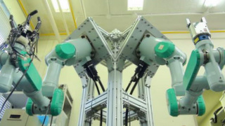

Dual-Arm Robot Group
研究背景
近年，人型ロボットやホームロボットの研究が盛んであり，
家事の代行や介護などを行うことによる実環境への進出が期待されています．
これらのロボットには，産業用ロボットが活躍するような作業内容や環境条件の変化しない状況ではなく，人間が生活している環境のようにこれらが変化する状況において様々な作業を柔軟に実行することが求められています．
研究目的
■ 双腕ロボットシステムによる家庭内作業の実現
ロボットが複数の複雑な作業を実現するためにはロボットが作業内容を理解し，
その作業内容を満たす動作を実行する必要があります．
そのために我々は，作業の制約として対象物
における形状・寸法・位置・姿勢と把持する位置，ロボット
における形状・寸法・可動範囲と把握方法・把握姿勢，環境における障害物の
形状・寸法・位置・姿勢と把握に使用可能な面に着目しています．
これらを考慮し，双腕ロボットシステムを用いた動作生成システムを開発します．
そして、双腕ロボットによる家庭内作業の実現を目的としています．
{kind=link}
Fig.1 動作生成に必要な要素
研究内容
我々の双腕ロボットシステムは深度センサや力覚センサから得られる情報をもとに，
二本のマニピュレータと手先のハンド・グリッパを用いて作業を実行します．
このように，複数のマニピュレータや状態の異なるハンド・グリッパを用いることで，
単腕のみでは実現できない多くの作業を実現できます．以下にその例を示します．
例1) 単腕の許容荷重を超える重量物の運搬
例2) 対象物を固定した作業
例3) 対象物の形状・質量と障害物の状態による把持機（ハンド・グリッパ）の選択
今後，人間の生活環境においてロボットが作業するためにはロボットの動作の自動生成が必要となります． なぜなら，従来マニピュレーションロボットが工場などで作業を行う際，すべての動作を人間によって教えられており，作業内容や対象物の変化に柔軟に対応することができないからです． このことが，ロボットが我々の身の周りに進出できない最大の問題といえます． そのために我々は，Rapidly-exploring Random Tree（RRT）を用いて対象物・ロボット・環境を考慮した作業動作を自動生成し，作業を実現する研究を行っています．ロボットの作業生成には経路生成だけでなく，物体の把持方法も決定する必要があります．人間は作業生成の開始と終了をロボットに教えるだけで，ロボットがランダムに経路を生成するので，動作生成に人間がかけるコストは大きく減少します．対象物の把持方法の決定には Grasping Surface based Description（GSD）法を用い，人の手の把握の操作を把握面の関係のみで解析・記述します．
例1) 単腕の許容荷重を超える重量物の運搬
例2) 対象物を固定した作業
例3) 対象物の形状・質量と障害物の状態による把持機（ハンド・グリッパ）の選択
今後，人間の生活環境においてロボットが作業するためにはロボットの動作の自動生成が必要となります． なぜなら，従来マニピュレーションロボットが工場などで作業を行う際，すべての動作を人間によって教えられており，作業内容や対象物の変化に柔軟に対応することができないからです． このことが，ロボットが我々の身の周りに進出できない最大の問題といえます． そのために我々は，Rapidly-exploring Random Tree（RRT）を用いて対象物・ロボット・環境を考慮した作業動作を自動生成し，作業を実現する研究を行っています．ロボットの作業生成には経路生成だけでなく，物体の把持方法も決定する必要があります．人間は作業生成の開始と終了をロボットに教えるだけで，ロボットがランダムに経路を生成するので，動作生成に人間がかけるコストは大きく減少します．対象物の把持方法の決定には Grasping Surface based Description（GSD）法を用い，人の手の把握の操作を把握面の関係のみで解析・記述します．

{kind=link}
Fig.2 ロボットシステムの全体図
■ 作業制約を考慮した双腕ロボットのマニピュレーション計画
我々の身の周りでロボットが作業するためには，障害物回避や作業制約を考慮した経路計画法によるマニピュレーション計画が必要です．RRTを用いることで，与えられた作業制約に応じた把持点および経路が決定できます．
■ モデルデータベースに基づいた把持計画
ロボットがユーザに依存せずに命令された作業を実現するために対象物の認識・識別・扱いを考慮できる必要があります．
深度センサを用いた物体認識により，作業に必要な対象物の三次元位置推定を行います．位置推定した円筒物体が対象物であるか形状特徴をモデル化したモデルデータベースに基づいて識別します．その後，識別したモデルに対して作業内容をモデル化したモデルデータベースに基づいて把持位置とそこまでのアプローチ方法を計画します．
■ 力制約による双腕・単腕による把持決定の自律化
物を搬送する際，対象物が重い時は双腕を用いて搬送する必要があります．そこで本研究室では，対象物を把持するグリッパの性能を考慮することで，力制約を導入しました．これにより，搬送作業を行う際に，単腕・双腕による把持を事前に決定することなく，動作生成を行うことが可能です．
■ ファイルケース収納作業の実現
本動作生成システムを用いることで，二つのファイルケースを棚に収納する作業をを実現しました．その際，対象物であるファイルケースの重量を変更することで，単腕・双腕による把持を適切に行い，作業を実現しました．
■ GSD法に基づき設計した3指ロボットハンド
物体の把握，操りといった作業を行うための器用な把握操作を行う上でロボットハンドは必要不可欠な機械要素です．我々は
GSD 法による解析に基づいてロボットハンドを設計製作しました．これにより，様々な日用品を把持することができます．また，高剛性なアタッチメント平板を用いることで，重量物にも対応できます．
■ コンプライアンス制御によるアタッチメントの取り付け
上記で示したアタッチメントはロボット自身による取り付け，取り外しが可能になるよう設計されています．しかし，ロボットアームの手先位置制御のみでは，ロボット自身による着脱動作は困難です．そこで，力覚センサを用いたコンプライアンス制御を適用し，仮想的なばね効果を実現することで，ロボットが破損しないようにアタッチメントを着脱することができます．
■ 双腕協調制御による対象物に加わる力を考慮した把持
仮想ステッキ理論を用いた双腕協調制御により，対象物に加わる力と位置・姿勢を同時に制御します．対象物を両脇から挟み込む双腕協調制御よりも滑りの影響を抑えた把持を行うために，対象物を抱え込むように把持を行っています，また、両手に加わる力を均等に分配することによって，可搬重量を向上できます．
■ USBカメラを用いたコンピュータビジョンによる物体認識
視覚センサによる物体認識で作業に必要な対象物の三次元位置推定を行います．
これは今後の対象物把持の研究のためには必要不可欠です．過去の研究において，
対象物の位置・形状情報は操作者が与えていましたが，今後はロボットが情報を取得し，
その情報をもとに作業を実行することが求められています．
左の写真はカメラから得られる画像で，
右の写真は得られた画像からペットボトルの位置を計算し，把持した結果です．
{kind=link}
{kind=link}